Can we find a way to describe all these shapes? (shown in fig. 4.20)
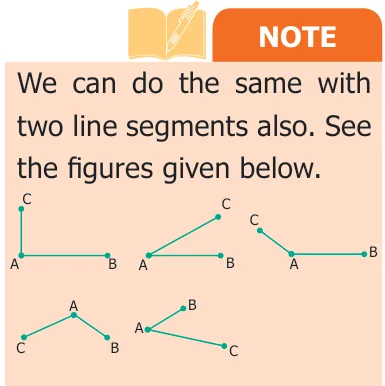
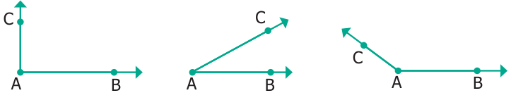
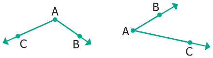
How would you describe whether a ray (or line segment) is vertical or slanting with respect to another ray (or line segment)?
Carrom board involves many geometric concepts like line segments and angles. When the striker hits the coin, the coin moves in a straight line. When the striker or coins hit the board end they make angles with the board while returning.
When two rays or line segments meet at their end points, they form an angle at that point.
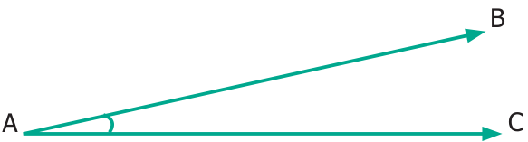
In the Fig.4.21 rays AB and AC are the arms and 'A' is the vertex which is the meeting point of both the line segments.
4.3.1 Naming Angles
We name the angle as shown in the Fig.4.22 below.
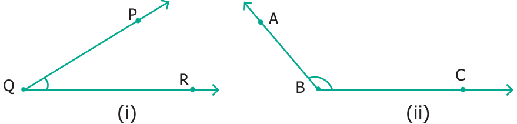
Fig 4.22(i) shows the angle \(\angle PQR\); QP, QR are its arms. 'P' is on QP; 'R' is on QR. Fig 4.22(ii) shows the angle \(\angle ABC\); BA, BC are its arms. 'A' is on BA; 'C' is on BC.
We name the angle in fig. 4.22 (i) as \(\angle Q\) or \(\angle PQR\) or \(\angle RQP\) . Similarly, in Fig. 4.22 (ii), we may write \(\angle B\) as \(\angle ABC\) or \(\angle CBA\).
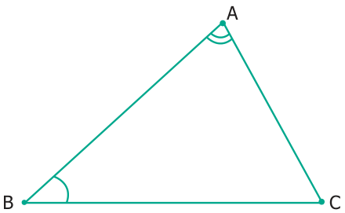
In the Fig. 4.23, two angles are marked.
Note that \(\angle BAC\) is not the same as \(\angle ABC\), as they have different vertices and different sides.
4.3.2 Measuring Angles
Can we measure angles too? Yes, using protractor they are measured in degrees which are denoted by the symbol ' \(^{\circ}\) '. This has to be marked at the top right of a number. We write angles as \(35 ^{\circ}\) , \(78 ^{\circ}\) , \(90 ^{\circ}\) , \(110 ^{\circ}\) , \(145 ^{\circ}\) and so on.
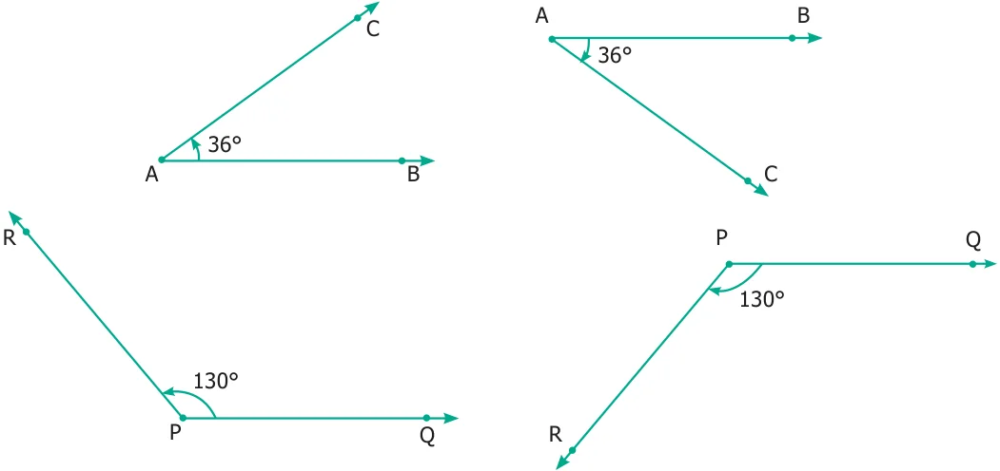
See that angles can be equal even if they are positioned differently.
4.3.3 Special Angles
Some angles are special. \(90 ^{\circ}\) is one such. We call it as the right angle.
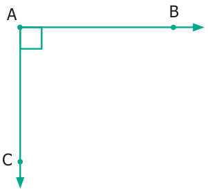
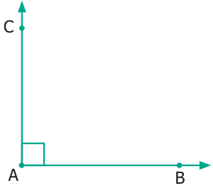
Right angle is most commonly seen. Examples can be seen at cross-roads, chess board, TV, etc.
Acute Angles
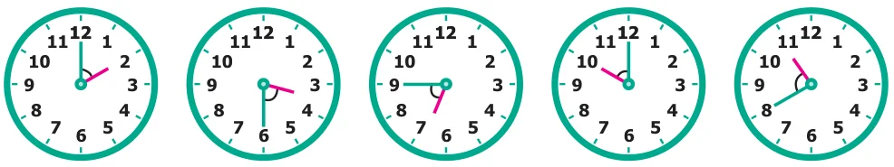
Each of the angles in the above Fig. 4.26 is less than a right angle. Angles smaller than \(90 ^{\circ}\) are called Acute angles.
Obtuse Angles
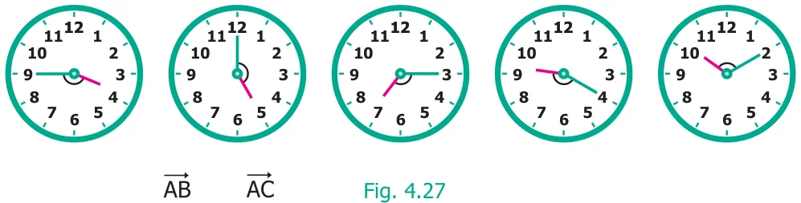
Each of the angles in the above Fig. 4.27 is greater than right angle. If an angle is more than \(90 ^{\circ}\) and less than \(180 ^{\circ}\) is called an obtuse angle.
Activity
Stand facing the north side. Take a 'right angle turn' clockwise; you now face east. Again take another 'right angle turn' in the same direction. You now face south. Once again take another 'right angle turn' in the same direction. You now face west. Then follow the same you will come to the original position. Thus the complete turn is called one revolution. The turn from north to south will be two right angles. It is also called a straight angle. Two straight angles make one complete revolution. This is illustrated in the following figures.
Try These
- Which direction will you face if you start facing West and take three right turns clockwise?
- Which direction will you face if you start facing North and take two right turns anti- clockwise?
4.3.4 Angle measurement using Protractor
How do we measure an angle? Using a PROTRACTOR we can measure an angle.
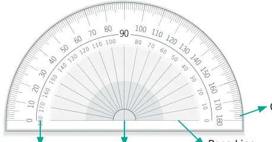
Inner Scale Centre
A protractor has one centre and a base line. It has two scales namely, inner scale from \(0 ^{\circ}\) to \(180 ^{\circ}\) in anti clockwise direction and outer scale from \(0 ^{\circ}\) to \(180 ^{\circ}\) in the clockwise direction. Why does the protractor stop with \(180 ^{\circ}\) ? We can rotate the protractor and measure, so \(180 ^{\circ}\) is enough.
Steps To Measure an angle
Step 1: Place the centre of the protractor on the vertex of the angle and line up the base
line with \(0 ^{\circ}\) .
Step 2: Read the measure where the other ray crosses the protractor.
4.3.5 Using Protractor to draw Right Angle \((90 ^{\circ}\) )
Example 4.2
Use a Protractor to draw an angle \(90 ^{\circ}\) .
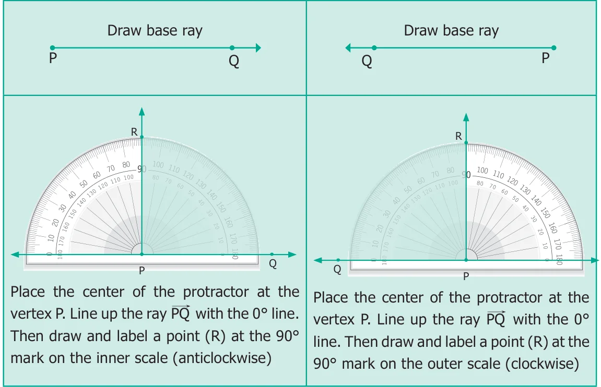
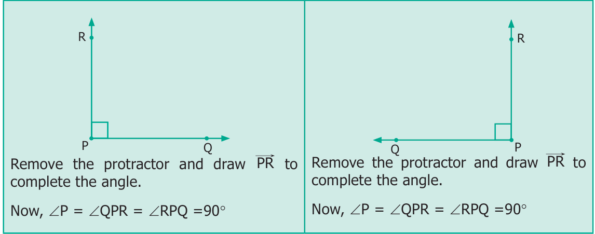
4.3.6 Using Protractor to draw an Acute Angle
Example 4.3
Use a Protractor to draw an angle \(45 ^{\circ}\) .
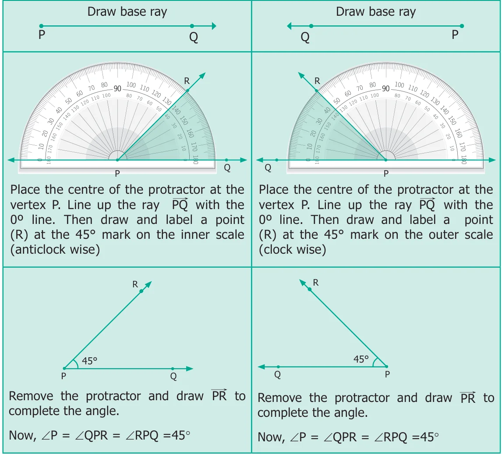
4.3.7 Using Protractor to draw an Obtuse Angle
Example 4.4
Use a protractor to draw an obtuse angle \(120 ^{\circ}\) .
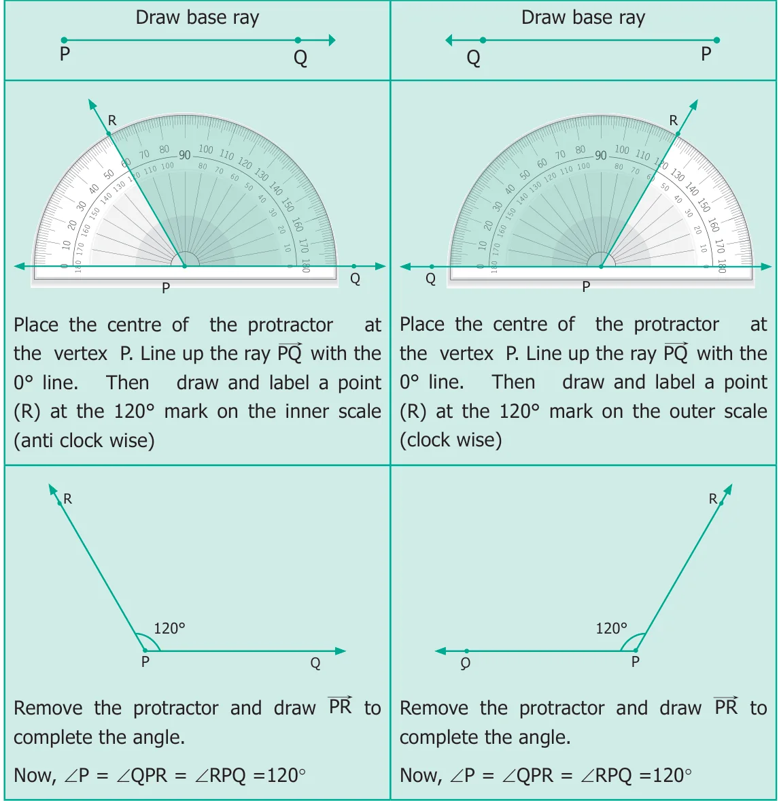
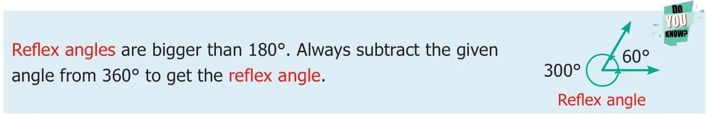
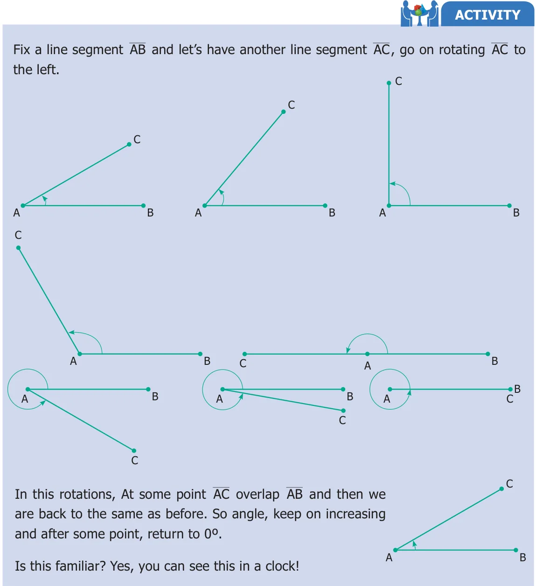
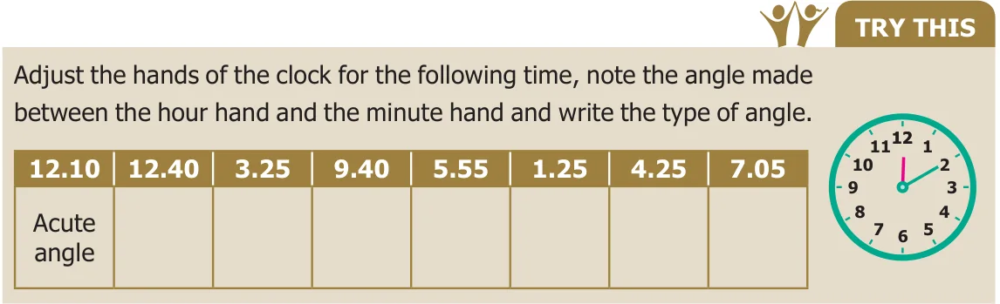
4.3.8 Very special angles
- Here you find AC is exactly on AB ; then the angle is \(0 ^{\circ}\) . It is called the Zero angle.
- If 'C' is exactly on the opposite side of 'B', with vertex 'A' in the middle. Then the angle is \(180 ^{\circ}\) . It is called the Straight angle.
4.3.9 Special pairs of angles
Two angles are complementary to each other if their sum is \(90 ^{\circ}\) [See Fig. 4.28(i)]
Two angles are supplementary to each other if their sum is \(180 ^{\circ}\) [See Fig. 4.28(ii)]

In the above figures, \(20 ^{\circ}\) and \(70 ^{\circ}\) are complementary angles and \(147 ^{\circ}\) and \(33 ^{\circ}\) are supplementary angles. But \(35 ^{\circ}\) and \(75 ^{\circ}\) are neither complementary nor supplementary.
- Use any number of the given dots to make different angles.
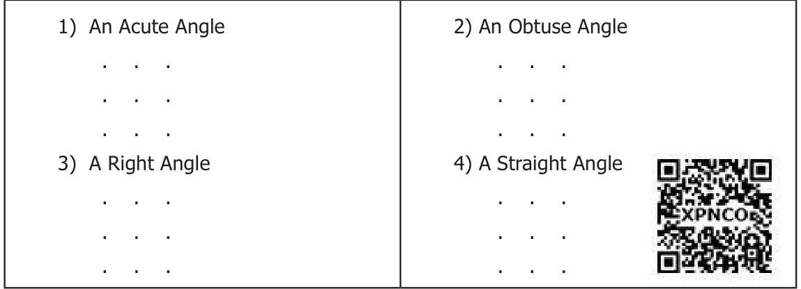